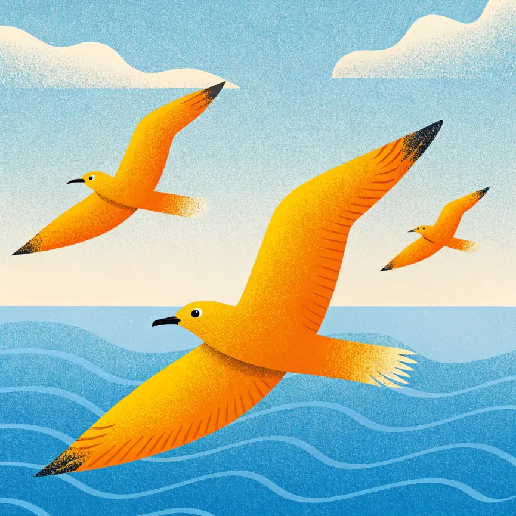
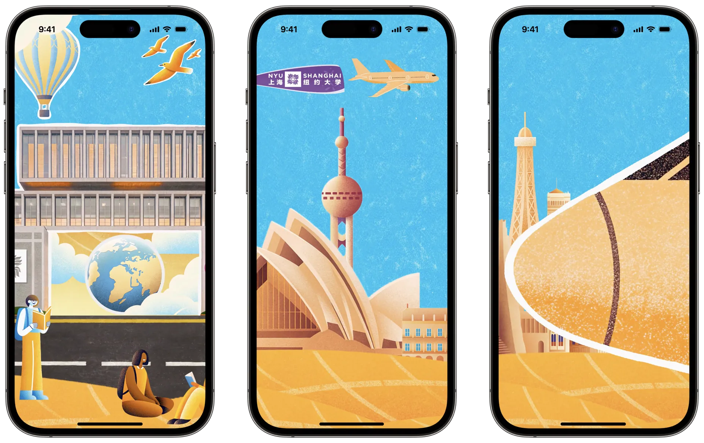

Animation Video
AIGC
Control,
not chance.
A 2025 social media opening animation for NYU Shanghai — a controlled AI illustration system, set in motion.

One world,
many scenes.
Palette, texture, composition and subject scale were fixed before generation, so the same visual grammar holds across landmarks, landscapes, travel imagery and atmospheric transitions.

- Define
Set the visual grammar: palette, grain, light and scale.
- Reference
Build a reference system that keeps every generation on-model.
- Test
Check consistency across subjects before committing to a scene.
- Refine
Correct and assemble the images by hand.
- Sequence
Pace the scenes, transitions and typography for motion.
- Deliver
Output across horizontal and vertical social formats.
Images
become time.
The illustration system was sequenced through pacing, spatial transitions, typography and compositing in After Effects.
Watch the published animation ↗